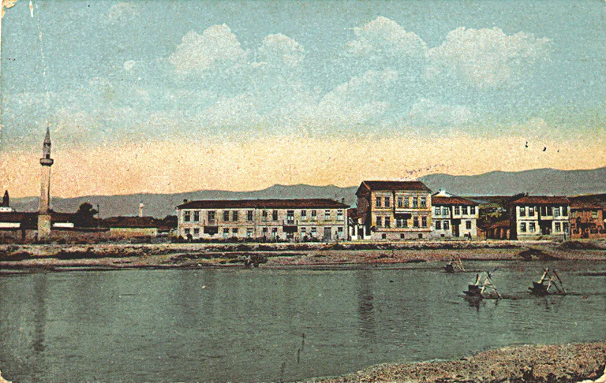
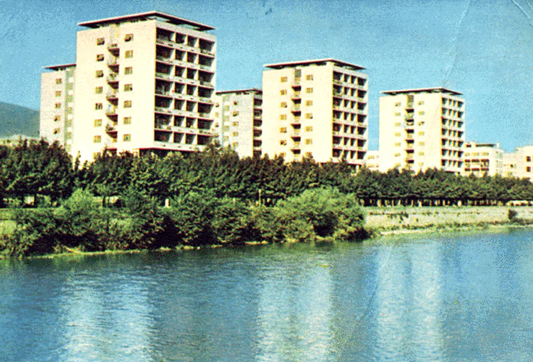

Vardar nehri üzerinde
- Senaryo
- Dimitrie Osmanli, Simon Drakul
- Kamera
- Kiro Bilbilovski
- Yıl
- 1964
- Süre
- 00:16

"13 Kasım" rıhtımı - 1888.

Vardar'ın yukarı akışında bir su değirmeni - 19. yüzyılın sonu.

Bu kartpostal ağır hasarlı olsa da 19. yüzyılın sonu ve 20. yüzyılın başına ait olduğu ve yalnızca bu kartpostalda bulunan bazı binaları gösterdiği için yine de bu koleksiyona alındı. Sağda Osmanlı Bankası. Ön planda 1689'da Karpoş'un cesedinin asıldığı yaşlı çınar. Üzerinde Üsküp Kalesi yükseliyor. En solda Taş Köprü'nün bir bölümü.

Vardar'ın iki rıhtımının görünümü - 20. yüzyılın başı.

1902'de Üsküp - Taş Köprü'den ahşap köprüye bakış. Vardar'ın rıhtım duvarları var. Konut ve kamu binaları görülüyor. Fotoğrafın sağında Türk tiyatrosu, solda, en başta Burmalı Camii. Arka planda banka ve eski postane.

Küçük ahşap köprüye, eski Türk tiyatrosuna ve Üsküp Kalesi'nin bir bölümüne bakış. (20. yüzyılın başı)

Vardar'ın sağ kıyısından Üsküp Kalesi'ne bakış. (20. yüzyılın başı).

Vardar'ın sol kıyısının görünümü ("Dimitar Vlahov" rıhtımı) - 20. yüzyılın başı. Rıhtım duvarında Serava deresinin ağzı görülüyor.

Demir Köprü yapılmadan önceki ahşap köprü. Arka planda Taş Köprü ve Burmalı Camii. (19. yüzyılın sonu)

20. yüzyılın başı. Osmanlı Bankası, Üsküp Metropolitliği ve Vardar'ın sol kıyısında, Taş Köprü'nün hemen ardındaki binalar. Ön planda yaşlı çınar.

Vardar'ın sol kıyısından Aziz Mina kilisesine (iki kubbeli) ve Meryem Ana kilisesine (arka planda tek kubbeli) bakış. - 20. yüzyılın başı.

Ön planda adliye binası ve eski okul, arka planda Aziz Mina kilisesinin kubbeleri görülüyor - 20. yüzyılın başı.

Vardar'dan iki rıhtımın görünümü - 20. yüzyılın başı.

Vardar'ın sol kıyısı - arka planda Osmanlı Bankası, Metropolitlik ve Aziz Mina kilisesinin iki kubbesiyle "Dimitar Vlahov" rıhtımı. (20. yüzyılın başı)

Vardar'ın sol kıyısı - Taş Köprü ile Demir Köprü arasında, konutlarla "Dimitar Vlahov" rıhtımı. (20. yüzyılın başı)

Fotoğraf 1910 civarında Taş Köprü'den çekildi. Solda eski Türk tiyatrosu, üzerinde Üsküp Kalesi görülüyor.

Vardar'ın sol kıyısı, Yahudi mahallesi ve arka planda Üsküp Kalesi. (1910)

Fotoğraf 1910 civarında Taş Köprü'den çekildi. Solda eski Türk tiyatrosu, üzerinde Üsküp Kalesi görülüyor.

1916 selinde Üsküp. Su binalara kadar ulaştı. Sağda selden dolayı bir binanın bir kısmının yıkıldığı görülüyor.

1918'den sonra Üsküp. Şehrin büyümesi için önemli ana güzergâhlar olarak Vardar'ın iki rıhtımı. Arka planda Burmalı Camii ile Taş Köprü. Rıhtım boyunca Avrupa okuluna yakın çeşitli mimari üsluplarda çok sayıda bina.

Balkan Savaşı'ndan önce Üsküp. Vardar'ın sağ kıyısındaki rıhtım. Arka planda Burmalı Camii ve Taş Köprü. Ön planda Rus konsolosluğu ve Avrupa mimari okulunun etkisini taşıyan diğer binalar: klasik, akademik ve sözde klasik biçimler.

Taş Köprü ile küçük ahşap köprü arasındaki banka ve eski postane binalarıyla Vardar'ın sağ kıyısına bakış - 1920'lerin başı.

Vardar'ın sol kıyısına bakış. Ön planda adliye binası ve eski okul, arka planda Aziz Mina kilisesinin kubbeleri. Sağında Meryem Ana kilisesi. - 1920'ler.

Taş Köprü ile küçük ahşap köprü arasındaki banka ve eski postane binalarıyla Vardar'ın sağ kıyısına bakış - 1920'lerin başı.

Taş Köprü'nün önünde Vardar'ın sağ kıyısı. Solda banka ve eski postane binaları. Kartpostalın sağında küçük ahşap köprü - 1920 civarı.

Taş Köprü ile küçük ahşap köprü arasındaki banka ve eski postane binalarıyla Vardar'ın sağ kıyısına bakış - 1920'lerin başı.

Vardar'ın sol kıyısının bir bölümü - aşağı yukarı bugün Makedon Radyo Televizyonu binasının bulunduğu yer. Vardar Tekke Camii'nin (16. yüzyılın başında yapıldı) minaresi görülüyor - 1920'lerin başı.

Vardar'ın sol kıyısının bir bölümü - aşağı yukarı bugün Makedon Radyo Televizyonu binasının bulunduğu yer. Vardar Tekke Camii'nin (16. yüzyılın başında yapıldı) minaresi görülüyor - 1920'lerin başı.

Taş Köprü'nün önünde Vardar'ın sağ kıyısına bakış. Rıhtımın orta kısmı. Solda banka ve eski postane. Kartpostalın sağında küçük ahşap köprü - 1920 civarı.

Üsküp - meydanın bir bölümü. Solda Taş Köprü'nün bir bölümü, sağda Milli Banka yapılmadan önceki arsa. Rıhtım trafik için cadde olarak düzenlenmiş. Arka planda sağda erkek lisesi.

Üsküp - meydanın bir bölümü. Solda Taş Köprü'nün bir bölümü, sağda Milli Banka yapılmadan önceki arsa. Rıhtım trafik için cadde olarak düzenlenmiş. Arka planda sağda erkek lisesi. - 1930'lar

"Dimitar Vlahov" rıhtımı - Vardar'ın sol kıyısı. - 1920'lerin başı

Taş Köprü'den düşen savaşçılar anıtına ve Osmanlı Bankası'na bakış. - 1920'ler.

Üsküp'ün panoramik görünümü: Yahudi mahallesinin bir bölümü, Pajko mahallesi ve Taş Köprü ile Vardar'ın sol rıhtımı. - 1920'ler

Subaylar Evi'nden Yahudi mahallesine doğru Üsküp'ün görünümü. - 1920'ler.

Konutlarla Vardar'ın sağ kıyısının görünümü. Arka planda Taş Köprü ve inşa halindeki Subaylar Evi. (1925 civarı)

Üsküp, 1930'lar. İki rıhtıma bakış. Ön planda eski okul ve adliye binası, hemen arkalarında Aziz Mina kilisesinin iki çan kulesi. Arka planda, Milli Banka yapılmadan önce Subaylar Evi. Demir Köprü'den fotoğraflandı.

Taş Köprü'nün önünde Vardar'ın sağ kıyısındaki rıhtım. Ön planda zemin katında dükkânlar bulunan bir konut binası ve 1920'lerde yapılan, zanaat ve ticaret dükkânlarının bulunduğu küçük bir alışveriş merkezi olan "Aroesti" pasajının girişleri. (1963'teki yıkıcı depremde burada çok kişi öldü.) Arka planda ziraat bankası, Subaylar Evi, Milli Banka ve Taş Köprü. (1930'lar)

Konutlar, Taş Köprü'nün bir bölümü ve Subaylar Evi ile "13 Kasım" rıhtımı - 1920'ler.

Vardar'ın sağ kıyısındaki "13 Kasım" rıhtımına, Taş Köprü'ye ve Subaylar Evi'ne bakış - 1927 civarında fotoğraflandı.

Taş Köprü'nün önündeki meydanın bir bölümü ve Vardar'ın iki kıyısı. Arka planda solda iki kubbeli Aziz Mina kilisesi ve biraz daha solda Meryem Ana kilisesi. Rıhtım elektrik aydınlatması ve yeşillikle düzenlenmiş. (1925-1930)

Vardar'ın sağ kıyısı, küçük ahşap köprüden parka doğru - 1930'lar.

"13 Kasım" rıhtımı. Taş Köprü'ye ve Subaylar Evi'ne bakış - 1930'ların sonu.

Taş Köprü'nün önünde Vardar'ın sol kıyısındaki rıhtım, Yahudi mahallesindeki konutlarla. Arka planda Osmanlı Bankası - 1930 civarı.

Vardar üzerindeki Taş Köprü'den küçük ahşap köprüye ve nehrin iki kıyısına bakış. Sağda Milli Tiyatro, solda banka ve eski postane. - 1930'lar

"Bunjakovec" mahallesinin görünümü. Vardar yatağı toprak setlerle korunuyor. - 1930'lar

Taş Köprü'den fotoğraflanan Vardar'ın sol ve sağ kıyıları. Vardar'ın iki yanında rıhtımın orta kısmı. - 1930 civarı

Vardar'ın sağ kıyısı. "13 Kasım" rıhtımı. - 1930 civarı

Üsküp, 1930'lar. Vardar üzerindeki Demir Köprü'den, konut ve kamu binalarıyla dolu iki rıhtıma bakış. Ön planda sağda eski okul, adliye binası ve Aziz Mina kilisesinin iki çan kulesi. Arka planda Subaylar Evi ve Milli Banka.

Vardar'ın sağ kıyısındaki "13 Kasım" rıhtımına, Taş Köprü'ye ve Subaylar Evi'ne bakış - 1930 civarında fotoğraflandı.

Vardar'ın iki rıhtımı ve Demir Köprü'nün görünümü. - 1950'ler

Vardar'ın iki rıhtımı ve Beton Köprü'nün görünümü. - 1950'ler.

Taş Köprü'nün ardında Vardar'ın sağ kıyısı, 26 Temmuz 1963'teki yıkıcı depremden önce fotoğraflandı. Arka planda Subaylar Evi ve Milli Banka.

Vardar'ın sağ kıyısındaki rıhtım. "Vardar Kuleleri" iş ve konut kompleksi (mimar Aleksandar Serafimovski). Fotoğraf 1960'larda, 26 Temmuz 1963'teki yıkıcı depremden önce çekildi.

Taş Köprü, Vardar boyundaki kuleler ve "Skopje" grand oteli ile Vardar'ın sağ kıyısı; 26 Temmuz 1963'teki yıkıcı depremden hemen sonra, Vardar düzenlenmeden önce fotoğraflandı. Düzenleme 1965-1968'de yapıldı.

Vardar'ın sağ kıyısına bakış. Ön plandaki kemer Taş Köprü'nün bir parçası; 1950'lerde fotoğraflandı.

Vardar'ın sol kıyısından Taş Köprü'ye bakış. Arka planda Vardar Kuleleri görülüyor. - 1970'ler

Bugünkü merkez postanesi - Telekomünikasyon Merkezi (1974-1980'de inşa edildi, mimar Janko Konstantinov) ve önündeki rıhtım.

 Su kemeri4 kartpostal
Su kemeri4 kartpostal Kale30 kartpostal
Kale30 kartpostal Köprüler60 kartpostal
Köprüler60 kartpostal Rıhtım58 kartpostal
Rıhtım58 kartpostal Meydan46 kartpostal
Meydan46 kartpostal Binalar66 kartpostal
Binalar66 kartpostal Hristiyan kiliseleri19 kartpostal
Hristiyan kiliseleri19 kartpostal İslami yapılar33 kartpostal
İslami yapılar33 kartpostal Subaylar Evi29 kartpostal
Subaylar Evi29 kartpostal Tiyatro28 kartpostal
Tiyatro28 kartpostal Tren garı13 kartpostal
Tren garı13 kartpostal Okullar36 kartpostal
Okullar36 kartpostal Parklar12 kartpostal
Parklar12 kartpostal Pazarlar18 kartpostal
Pazarlar18 kartpostal Sokaklar38 kartpostal
Sokaklar38 kartpostal Panorama I60 kartpostal
Panorama I60 kartpostal Panorama II30 kartpostal
Panorama II30 kartpostal Kolajlar55 kartpostal
Kolajlar55 kartpostal Seller9 kartpostal
Seller9 kartpostal Deprem27 kartpostal
Deprem27 kartpostal Üsküp 200026 kartpostal
Üsküp 200026 kartpostal